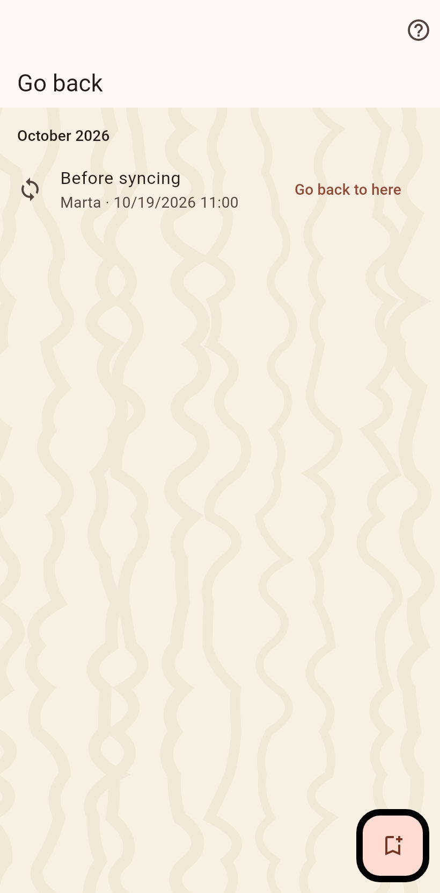

The moments this catalog changed shape: before every import and sync, before a merge, an archive or a deletion, and whenever you marked one yourself.

Choosing a moment returns the catalog to that state: everything after it is written to a file you keep and then removed, and every newer moment goes with it. People you already synced with keep what they received; the next sync brings it back, which is what a wrong import deserves and a wrong merge does not.
The button on this page marks a moment with a name of your own, before a change you are unsure about.